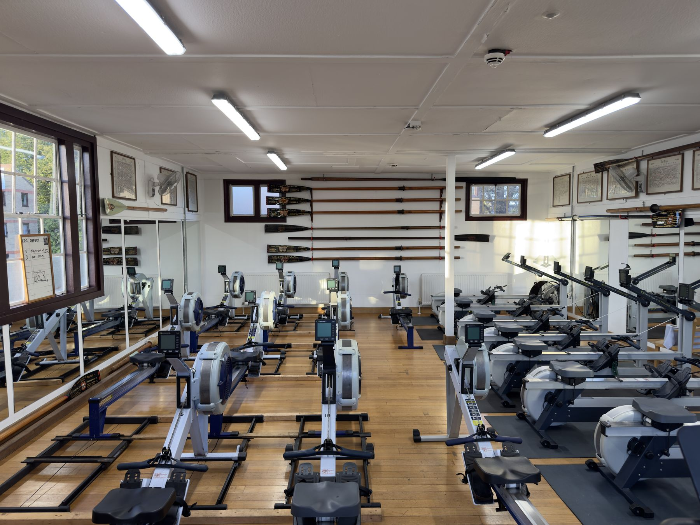
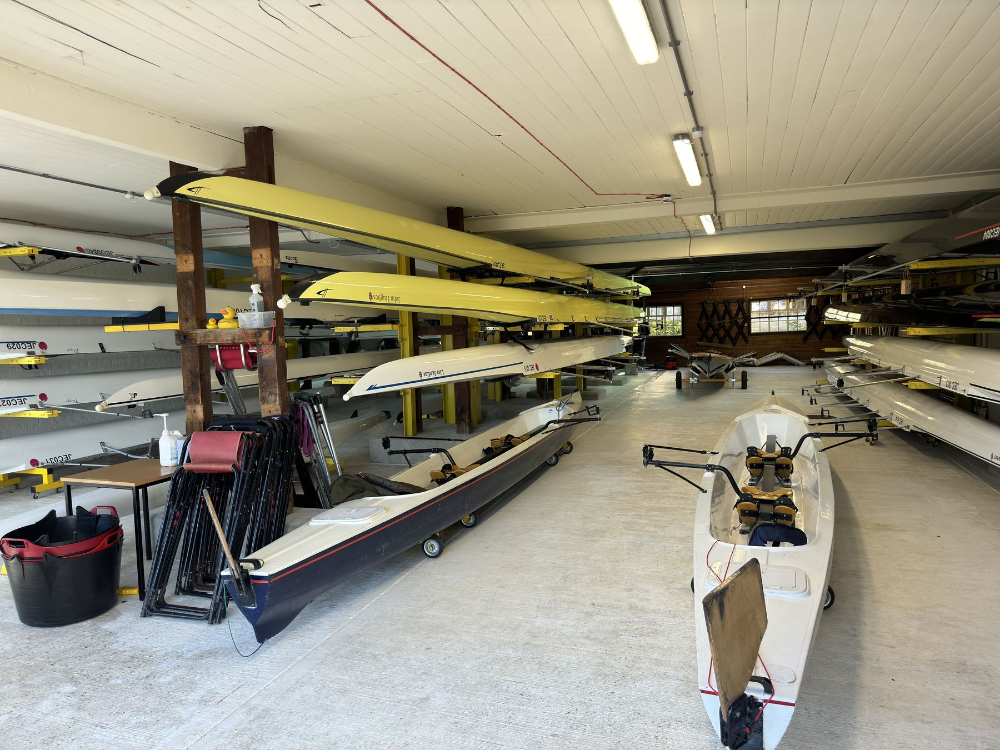

One of the largest boathouses on the Cam and one of its most extensive fleets — over 30 boats, two full-time coaches, and a five-minute cycle from College.

The JCBC boathouse is one of the largest on the River Cam and sits next to the Goldie Boathouse, home of CUBC. Built in the 1930s and refurbished in 2013, it's equipped with changing rooms, showers, toilets, bike storage, a kitchen, an ergo room and a crew room for debriefs, meetings and stretching — plus a coaches' office and workshop.
Best of all, it's a five-minute cycle from College accommodation: the most convenient location in Cambridge.
We have two full-time qualified coaches — one focusing on seniors, one on novices — supported by many others to develop rowers to their fullest potential. Every year, Jesus rowers progress to represent CUBC in one of the Boat Races.
Our Head Coach holds the highest coaching qualification (Level 4) and has worked for British Rowing; our assistant coach is Level 2 qualified.

Over 30 boats accommodate our consistently high number of crews — typically more than four on each of the men's and women's sides.
| Men's 1st VIII | 2022 Filippi |
| Men's 2nd VIII | Chris McDouall · 2018 Filippi |
| Women's 1st VIII | Sonita Alleyne OBE · 2025 Filippi |
| Women's 2nd VIII | Sally Adams · 2021 Filippi |
| Women's 3rd VIII | Ian White · 2016 Filippi |
A strong small-boats fleet, greatly expanded in 2020:
Three Filippi men's pairs (2005/06), two Empacher fours, a Filippi four, and numerous sculls from tubs up to quads.
Each January, a significantly subsidised training camp takes place — often in Spain, sometimes Portugal. It takes twelve men and women across an eight and small boats on each side, plus four coxes and four coaches.
College:
Jesus College, Jesus Lane, Cambridge, CB5 8BL
Boathouse:
Jesus College Boat House, via Kimberley Road, Cambridge
All Jesus College students — and anyone who shortly will be — can sign up to row. No experience required.